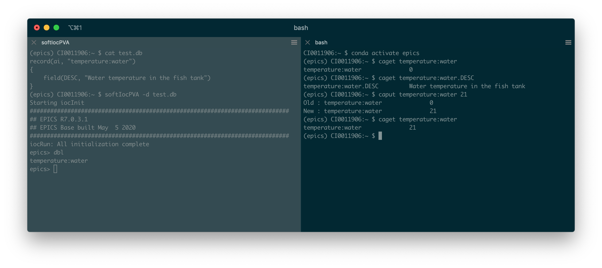
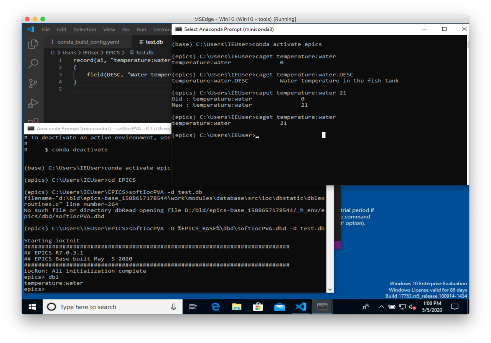

Using epics-base with conda on Linux, macOS and Windows
I previously described how to create a Windows VM to build conda packages. I mentioned this was to update the conda-forge epics-base feedstock. In this post, I want to share how to use EPICS Base with conda.
Acknowledgement
I'm not the original author of the epics-base feedstock. I want to thank all the people who contributed to that conda recipe.
All the examples of EPICS usage below come directly from the official website Getting Started page.
Miniconda
This post assumes some basic knowledge of conda. If you never used it before, I recommend starting by checking the documentation.
If you don't have conda already installed, here are some quick instructions. Refer to the official documentation for more detailed information.
Linux
Note that bzip2 is required to run the installation.
curl -LO https://repo.anaconda.com/miniconda/Miniconda3-latest-Linux-x86_64.sh bash Miniconda3-latest-Linux-x86_64.sh -bp $HOME/miniconda rm -f Miniconda3-latest-Linux-x86_64.sh # Let conda update your ~/.bashrc source $HOME/miniconda/bin/activate conda init
macOS
curl -LO https://repo.anaconda.com/miniconda/Miniconda3-latest-MacOSX-x86_64.sh bash Miniconda3-latest-MacOSX-x86_64.sh -bp $HOME/miniconda rm -f Miniconda3-latest-MacOSX-x86_64.sh # Let conda update your ~/.bash_profile source $HOME/miniconda/bin/activate conda init
Windows
Download and run the Miniconda3 installer from https://docs.conda.io/en/latest/miniconda.html#windows-installers. To use conda, open the Anaconda Prompt from the start menu.
Configuration
On Linux and macOS, if you don't want conda to activate the base environment by default (and modify your PATH), you should run:
conda config --set auto_activate_base false
This doesn't really apply to Windows as you have to start the Anaconda Prompt to use conda.
To be able to install package from conda-forge, add the conda-forge channel to your configuration. This applies to all platforms.
conda config --add channels conda-forge
Installing epics-base
Environment creation
Now that we have conda installed and configured, getting epics-base is as easy as running:
conda create -y -n epics epics-base
Note that you don't need any compiler or to install any other packages. The only requirement is conda. As of may 2020, the version installed should be 7.0.3.1.
Environment activation
To start using EPICS, activate the environment:
conda activate epics
You now have access to all the binaries provided by epics-base:
caget -h pvget -h softIocPVA epics> exit
On Windows, there is currently a small issue. If you run softIocPVA -h,
you will see that the compiled-in path to softIocPVA.dbd is incorrect:
(epics) C:\Users\IEUser>softIocPVA -h
Usage: softIocPVA [-D softIoc.dbd] [-h] [-S] [-a ascf]
[-m macro=value,macro2=value2] [-d file.db]
[-x prefix] [st.cmd]
Compiled-in path to softIocPVA.dbd is:
D:/bld/epics-base_1588657178544/_h_env/epics/dbd/softIocPVA.dbd
The path is the one that was used when the epics-base conda package was created.
Conda usually automatically replaces this $PREFIX variable when creating an environment.
It works on Linux and macOS but not on Windows in this case.
You have to give the explicit path to the dbd manually. You can use the %EPICS_BASE%
environment variable that is automatically set during the activation of the epics environment:
(epics) C:\Users\IEUser>softIocPVA -D %EPICS_BASE%\dbd\softIocPVA.dbd epics>
Note that if I understand correctly this tech-talk message, next release should use a relative path and remove this issue.
After activation, you can see that several EPICS environment variables have been
set. The PATH was also updated. It includes both $CONDA_PREFIX/bin as well
as $EPICS_BASE/bin/$EPICS_HOST_ARCH:
(epics) [tux@964ef40cabbb ~]$ env | grep EPICS EPICS_BASE_HOST_BIN=/home/tux/miniconda/envs/epics/epics/bin/linux-x86_64 EPICS_BASE_VERSION=7.0.3.1 EPICS_BASE=/home/tux/miniconda/envs/epics/epics EPICS_HOST_ARCH=linux-x86_64 (epics) [tux@964ef40cabbb ~]$ echo $PATH /home/tux/miniconda/envs/epics/epics/bin/linux-x86_64:/home/tux/miniconda/envs/epics/bin:/home/tux/miniconda/condabin:/usr/local/bin:/bin:/usr/bin:/usr/local/sbin:/usr/sbin:/home/tux/.local/bin:/home/tux/bin (epics) [tux@964ef40cabbb ~]$
Those variables are set by the activation script part of the epics-base package.
Running conda deactivate will unset those variables:
(epics) [tux@964ef40cabbb ~]$ conda deactivate (base) [tux@964ef40cabbb ~]$ env | grep EPICS (base) [tux@964ef40cabbb ~]$ echo $PATH /home/tux/miniconda/bin:/home/tux/miniconda/condabin:/usr/local/bin:/bin:/usr/bin:/usr/local/sbin:/usr/sbin:/home/tux/.local/bin:/home/tux/bin (base) [tux@964ef40cabbb ~]$
Simple test
With your editor of choice, create the test.db file that contains:
record(ai, "temperature:water")
{
field(DESC, "Water temperature in the fish tank")
}
Open a terminal and activate the epics environment.
On Linux and macOS, run:
softIocPVA -d test.db
On Windows, run:
softIocPVA -D %EPICS_BASE%\dbd\softIocPVA.dbd -d test.db
Open another terminal and run:
CI0011906:~ $ conda activate epics (epics) CI0011906:~ $ caget temperature:water temperature:water 0 (epics) CI0011906:~ $ caget temperature:water.DESC temperature:water.DESC Water temperature in the fish tank (epics) CI0011906:~ $ caput temperature:water 21 Old : temperature:water 0 New : temperature:water 21 (epics) CI0011906:~ $ caget temperature:water temperature:water 21 (epics) CI0011906:~ $
The following screenshots show the result on macOS and Windows.
Compiling a demo IOC
We saw how to use the binaries that come with epics-base. It's worth mentioning that you can also compile code using the installed conda package.
Pre-requisites
The pre-requisites are different depending on the platform.
Linux
There is no distribution specific dependencies to install. All requirements will be installed with conda.
We could use the existing epics environment but we'll create a new one to demonstrate that several environments can coexist in parallel.
Create and activate the epics-dev environment:
conda create -y -n epics-dev epics-base make compilers conda activate epics-dev
macOS
Conda provides the clang compilers for macOS. But the macOS SDK is still required. The SDK license prevents it from being bundled in the conda package. The SDK has to be installed manually. For compatibility issue, conda packages are built with the 10.9 SDK. To compile code locally that you don't plan to share, using a more recent version should be fine.
Solution 1: current SDK
Install Xcode Command Line Tools by running:
xcode-select --install
Solution 2: 10.9 SDK
As mentioned in conda-build documentation, the 10.9 SDK can be downloaded from:
Download MacOSX10.9.sdk.tar.xz
and untar it under /opt/MacOSX10.9.sdk.
Create and activate the epics-dev environment:
conda create -y -n epics-dev epics-base make compilers conda activate epics-dev
Before to be able to compile, two variables have to be set on macOS: MACOSX_DEPLOYMENT_TARGET and
CONDA_BUILD_SYSROOT.
Those variables are usually set automatically by conda-build. When compiling locally,
you have to set them manually.
CONDA_BUILD_SYSROOT is actually automatically set when activating an environment with
the compilers package. It should detect your Xcode installation:
(epics-dev) CI0011906:~ $ echo $CONDA_BUILD_SYSROOT /Library/Developer/CommandLineTools/SDKs/MacOSX.sdk
If you installed the 10.9 SDK, you might want to point to that instead:
export CONDA_BUILD_SYSROOT=/opt/MacOSX10.9.sdk
The variable MACOSX_DEPLOYMENT_TARGET, you have to set manually:
export MACOSX_DEPLOYMENT_TARGET=10.9
Windows
On Windows, you need to install the Visual C++ compilers. You only need to download the Build Tools for Visual Studio 2017. Refer to the post on how to setup a Windows VM to build conda packages for the instructions on how to install them.
Create and activate the epics-dev environment:
conda create -n epics-dev epics-base epics-base-static-libs make vs2017_win-64 conda activate epics-dev
vs2017_win-64 is a package that contains an activation script to setup VS 2017. Note that we also need to install the epics-base-static-libs to compile on Windows. The static libraries were moved to a subpackage to make epics-base package smaller. They are not needed most of the time on Linux and macOS. Maybe they should be part of the default package on Windows?
IOC creation
Make sure you activated the epics-dev environment you created. Note that we didn't have to specify perl when creating the environment. It's installed with epics-base as run dependency.
On Linux and macOS:
(epics-dev) CI0011906:~ $ mkdir -p $HOME/EPICS/testIoc
(epics-dev) CI0011906:~ $ cd $HOME/EPICS/testIoc
(epics-dev) CI0011906:~/EPICS/testIoc $ makeBaseApp.pl -t example testIoc
(epics-dev) CI0011906:~/EPICS/testIoc $ makeBaseApp.pl -i -t example testIoc
Using target architecture darwin-x86 (only one available)
The following applications are available:
testIoc
What application should the IOC(s) boot?
The default uses the IOC's name, even if not listed above.
Application name?
(epics-dev) CI0011906:~/EPICS/testIoc $ make
...
(epics-dev) CI0011906:~/EPICS/testIoc $ cd iocBoot/ioctestIoc
(epics-dev) CI0011906:~/EPICS/testIoc/iocBoot/ioctestIoc $ chmod a+x st.cmd
(epics-dev) CI0011906:~/EPICS/testIoc/iocBoot/ioctestIoc $ ./st.cmd
#!../../bin/darwin-x86/testIoc
< envPaths
epicsEnvSet("IOC","ioctestIoc")
epicsEnvSet("TOP","/Users/benjaminbertrand/EPICS/testIoc")
epicsEnvSet("EPICS_BASE","/Users/benjaminbertrand/miniconda3/envs/epics-dev/epics")
cd "/Users/benjaminbertrand/EPICS/testIoc"
## Register all support components
dbLoadDatabase "dbd/testIoc.dbd"
testIoc_registerRecordDeviceDriver pdbbase
## Load record instances
dbLoadTemplate "db/user.substitutions"
dbLoadRecords "db/testIocVersion.db", "user=benjaminbertrand"
dbLoadRecords "db/dbSubExample.db", "user=benjaminbertrand"
#var mySubDebug 1
#traceIocInit
cd "/Users/benjaminbertrand/EPICS/testIoc/iocBoot/ioctestIoc"
iocInit
Starting iocInit
############################################################################
## EPICS R7.0.3.1
## EPICS Base built May 5 2020
############################################################################
iocRun: All initialization complete
## Start any sequence programs
#seq sncExample, "user=benjaminbertrand"
epics> dbl
benjaminbertrand:testIoc:version
benjaminbertrand:xxxExample
benjaminbertrand:circle:step
benjaminbertrand:circle:period
benjaminbertrand:line:b
benjaminbertrand:aiExample
...
On Windows:
(epics-dev) C:\Users\IEUser> mkdir EPICS\testIoc
(epics-dev) C:\Users\IEUser> cd EPICS\testIoc
(epics-dev) C:\Users\IEUser\EPICS\testIoc> perl %EPICS_BASE_HOST_BIN%\makeBaseApp.pl -t example testIoc
(epics-dev) C:\Users\IEUser\EPICS\testIoc> perl %EPICS_BASE_HOST_BIN%\makeBaseApp.pl -i -t example testIoc
Using target architecture windows-x64 (only one available)
The following applications are available:
testIoc
What application should the IOC(s) boot?
The default uses the IOC's name, even if not listed above.
Application name?
(epics-dev) C:\Users\IEUser\EPICS\testIoc> make
...
(epics-dev) C:\Users\IEUser\EPICS\testIoc> cd iocBoot\ioctestIoc
(epics-dev) C:\Users\IEUser\EPICS\testIoc\iocBoot\ioctestIoc> ..\..\bin\windows-x64\testIoc.exe st.cmd
#!../../bin/windows-x64/testIoc
< envPaths
epicsEnvSet("IOC","ioctestIoc")
epicsEnvSet("TOP","C:/Users/IEUser/EPICS/testIoc")
epicsEnvSet("EPICS_BASE","C:/Users/IEUser/miniconda3/envs/epics-dev/epics")
cd "C:/Users/IEUser/EPICS/testIoc"
## Register all support components
dbLoadDatabase "dbd/testIoc.dbd"
testIoc_registerRecordDeviceDriver pdbbase
## Load record instances
dbLoadTemplate "db/user.substitutions"
dbLoadRecords "db/testIocVersion.db", "user=IEUser"
dbLoadRecords "db/dbSubExample.db", "user=IEUser"
#var mySubDebug 1
#traceIocInit
cd "C:/Users/IEUser/EPICS/testIoc/iocBoot/ioctestIoc"
iocInit
Starting iocInit
############################################################################
## EPICS R7.0.3.1
## EPICS Base built May 5 2020
############################################################################
iocRun: All initialization complete
## Start any sequence programs
#seq sncExample, "user=IEUser"
epics> dbl
IEUser:xxxExample
IEUser:circle:angle
IEUser:line:a
IEUser:circle:x
IEUser:circle:y
IEUser:calcExample
...
We have a running IOC on all 3 platforms!
Summary
I hope this post showed you how easy conda make it to install EPICS Base on Linux, macOS and Windows. We saw that this package can also be used to compile an IOC. That being said, if you want to use various EPICS modules, this is probably not the best solution today. As long as those modules aren't available as conda packages at least. But if all you need is EPICS Base, to interact with IOCs on other machines for example, then I'd really recommend conda.
Comments
Comments powered by Disqus